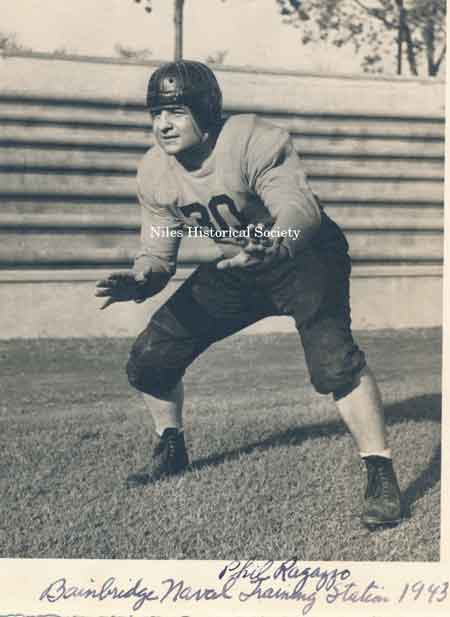

Ward-Thomas Museum


Phil Ragazzo
Ward — Thomas
Museum
Home of the Niles Historical Society
503 Brown Street Niles, Ohio 44446
Click here to become a Niles Historical Society Member or to renew your membership
Click on any photograph to view a larger image, click on image again to zoom into photograph.
|
Phil
Ragazzo, Cleveland Rams 1939 |
Phil Ragazzo. Philip John Ragazzo (June 24, 1915 – October 3, 1994) was an American football lineman who played in the National Football League (NFL) for the Cleveland Rams, the Philadelphia Eagles, and the New York Giants. He played college football at Western Reserve University (now known as Case Western Reserve University) and was drafted in the eighth round of the 1938 NFL Draft by the Green Bay Packers. He was inducted into the Case Western Reserve Hall of Fame in 1975. Considered one of the toughest at his position during his era, he played seven seasons in the National Football League, starting first with the Cleveland Rams (1938–1940) and then moving over to the Philadelphia Eagles (1940–1941) after being traded by the Rams. His play was interrupted by World War II, but he returned to the NFL as a member of the New York Giants where he played from 1945 to 1947. After football, he became a history teacher at Niles McKinley High School where he taught until his retirement. He died in Niles, Ohio of natural causes, October 3, 1994 at age 79. https://en.wikipedia.org/wiki/Phil_Ragazzo |
|
|
1941 Eagles photograph with |
 |
C: Phil Ragazzo in football uniform at Bainbridge Naval Training Center, 1943. Phil Ragazzo played football for the U.S. Navy from 1942-1944 His play was interrupted by World War II, but he returned to the NFL as a member of the New York Giants where he played from 1945 to 1947. |
|
1936 photograph featuring Phil Ragazzo bearing down on running back. |
The 1935 Western Reserve Red Cats football team represented Western Reserve University, now known as Case Western Reserve University, during the 1935 college football season. The team was led by first–year head coach Bill Edwards, who was assisted by Cyril Surington and George Brown. Notable players included Frank “Doc” Kelker, Ray Zeh, George “Puck” Burgeon, Gene Myslenski, and Phil Ragazzo. The Red Cats went undefeated while at home. The Bill Edwards era (1936–1941) propelled Western Reserve into the national spotlight, achieving three undefeated seasons (1935, 1936, and 1938), a 28-game win streak, and the school's only bowl game – 1941 Sun Bowl, played Jan 1, 1941. The undefeated teams featured strong play from Ray Zeh, Frank “Doc”Kelker, Phil Ragazzo, Albie Litwak, Johnny Ries, Gene Myslenski, Mike Rodak, Dick Booth, and Johnny Wilson. During the 1935 college football season, Ray
Zeh led the nation in scoring with 112 points. Over his six-year
tenure, Coach Edwards guided the team to a 49–6–2
(0.877) record, earning a spot in the College Football Hall of
Fame before heading off to coach the Detroit Lions. |
|
Photograph of Niles High School |
A graduate of Niles High School, he was a three–year letterman for the Red Dragons, graduating in 1934. He was an All–County and All–Ohio selection during a storied scholastic career, playing collegiately for Western Reserve from 1934 to 1937 where he earned All–American honors as a lineman. R: Phil Ragazzo was a member of the Art Metal Club in ninth grade. |
 |
 |
L: Phil Ragazzo Niles High School Basketball photograph. C: Phil Ragazzo photograph of 1933 Follies. R: Pete Gales and Phil Ragazzo in front of Niles High School, 1934. A scholarship Fund has been established in Phil Ragazzo’s name by his family for Niles McKinley High School students attending Case Western Reserve University.
|
|
| |
||
Phil Ragazzo, Niles Teacher and Coach. Phil Ragazzo was a teacher at Niles McKinley High School where he taught until his retirement. First, he became a history teacher at Niles McKinley High School. Later he was the Driver Educaton Instructor. He also was an assistant football coach for Joe Bassett and under Head Coach Tony Mason. Phil Ragazzo also served as acting Postmaster, July 5,1963 and was appointed as Postmaster October 1, 1963 of the Niles Post Office until January 1965, returning to teaching in 1965. Top Right: Speakers at Frontliners banquet in honor of the 1964 Niles McKinley High School football squad. Phil Ragazzo gave the welcoming address. Bottom Right: Teaching in the Niles McKinley High School auditorium, 1978. |
|
|
Driver Education teacher |
Phil Ragazzo with three students. |
Coach Ragazzo on the sidelines during Coach Tony Mason discussing play |
|
|
||


{kind=link}
{kind=link}
{kind=link}
{kind=link}
{kind=link}
{kind=link}
{kind=link}
{kind=link}
{kind=link}